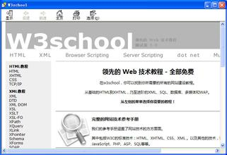
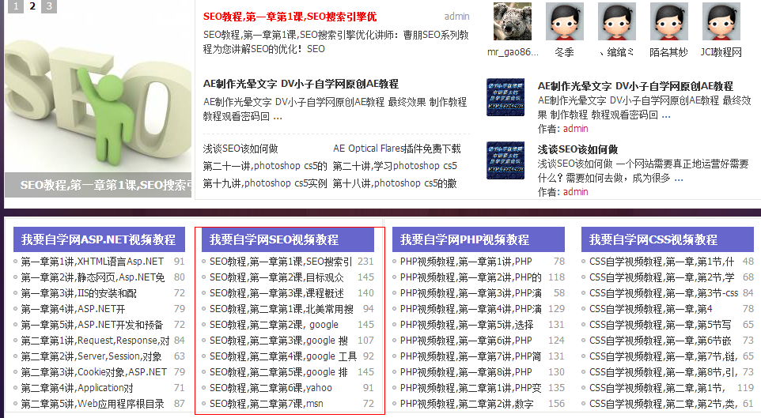
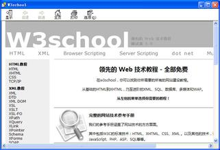
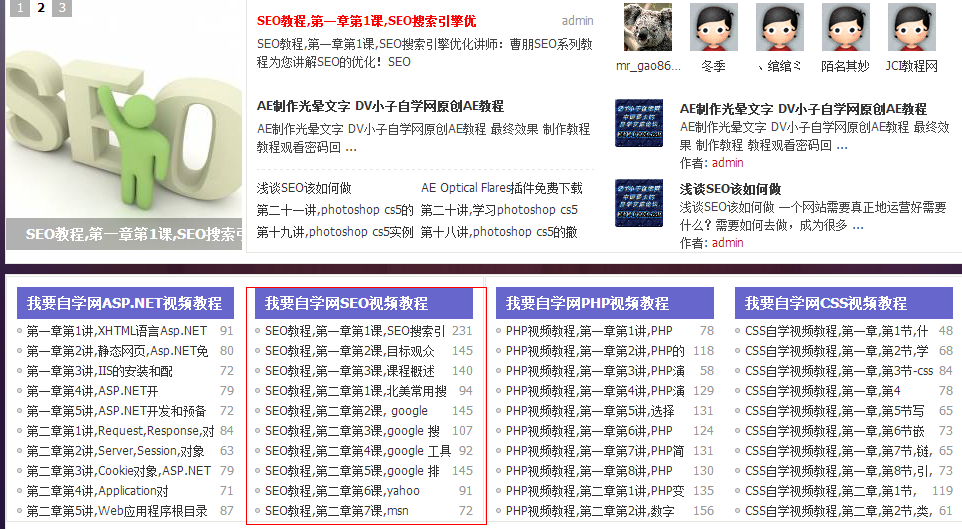

学习
互联网为大学生学习提供了丰富的资料和信息服务，扩大了大学生的知识面。互联网具有的资源共享、双向互动、合作交流的特点，使全球教育、双向教育、开放教育成为可能，为大学生学习科学知识、科研开发与查询信息资料提供了一个强大的服务平台。
互联网作为一种高新科技，其独有的功能与特性为大学生成才提供了卓越的条件。学子们在接受了传统课堂教育之余，通过电子图书及各大学习网站进行远程学习，将课堂教学向课外延伸，不断获取先进的、最新的国际信息资料，扩大了知识面，优化了知识结构。
通过对互联网丰富资源的学习，培养了大学生实验技能和科研技术水平，提高了自身素质，放眼全球，完善了人格。互联网为人类实现了知无涯，学无涯，学习再无时间、空间、对象的限制，使无限的、终生的、全球的学习成为可能。
 


